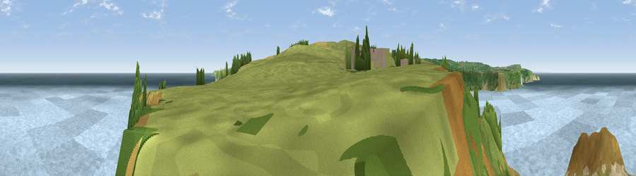

Viewpoint near Runswick Bay
#2802 in England · top 12% of its area beats it · near Runswick Bay · access?Where it is
The exact computed spot (NZ 83388 15825). Click the marker for map links.
Public access: no public right of way or access land is recorded at this exact spot — it may be on private land. Computed from Natural England's CRoW access layer and OpenStreetMap rights of way — not the legal definitive map. Always verify locally.
The view, rendered

A 360° render of this exact spot computed from the terrain model, tree cover and land cover — summer colours, afternoon light, calibrated against photographs of famous viewpoints. Real trees, hedges and buildings will differ in detail.
The panorama
Grey silhouette: terrain skyline in each direction (720 bearings, Earth curvature and refraction included). Dashed green: skyline with trees (+15 m) and buildings (+8 m) as obstacles. Blue strip: how far the ground is visible on each bearing.
Where the view opens
Wedge length = distance to the farthest visible ground on that bearing (vegetation-aware). Rings at 10, 25 and 50 km.
What fills the view
62% water · 30% grassland · 4% bare ground · 3% woodland · 1% cropland
Angular shares of the visible panorama (visual magnitude), not map area. Landscape diversity 0.41 (0–1 Shannon).
Key numbers
More beautiful places nearby
The staircase of upgrades: each row has a higher view potential than everything closer. Driving times are estimates from straight-line distance, calibrated against real road routing — check an actual route before setting out.
| Place | Direction | Drive | Score |
|---|---|---|---|
| Viewpoint near Lythe | S · 1 km | ~2 min | 81.3 |
| Beacon Hill | WNW · 5 km | ~10 min | 82.3 |
| Viewpoint near Easington | WNW · 9 km | ~17 min | 86.9 |
| Viewpoint near Easington | WNW · 10 km | ~19 min | 90.2 |
| The Knoll | SSW · 447 km | ~418 min | 91.0 |
54.53085, -0.71294 · source: screening · position refined by local search. Computed location — check access rights before visiting.